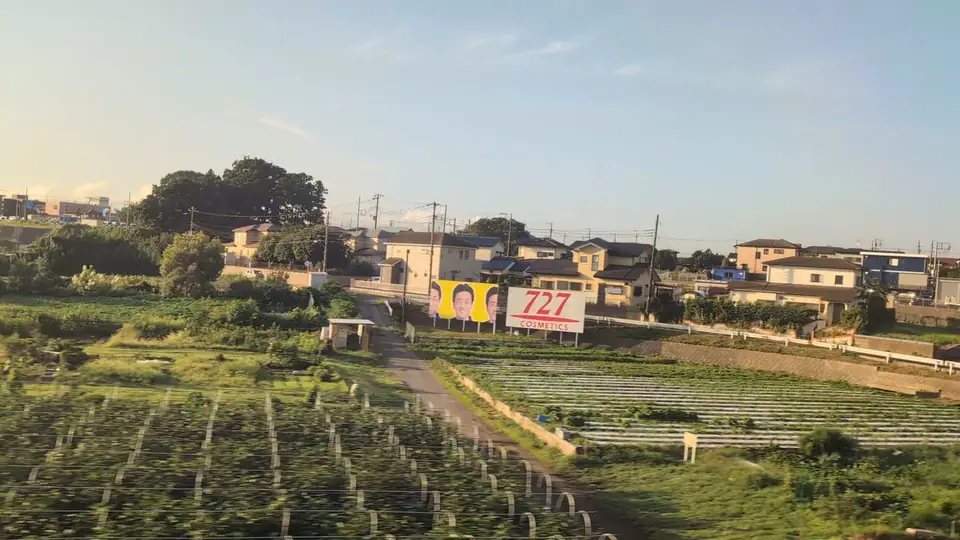

01 / LE JAPON AU QUOTIDIEN
Partez de la forme dont vous vous souvenez
Ces paysages ne sont pas des attractions installées pour le train. Ce sont des champs cultivés, des usines, des équipements sportifs et des repères sacrés : des éléments ordinaires du Japon qui surprennent lorsqu'ils défilent devant la fenêtre.

Que sont ces rangées vert vif?
La réponseLes champs de thé de Shizuoka
Les théiers sont taillés en longues haies arrondies qui suivent les courbes des collines. Au printemps, les premières feuilles teintent les champs d'un jaune-vert éclatant : l'un des paysages emblématiques de Shizuoka.
Regardez encore. Et les ventilateurs ? Les hélices au-dessus des rangées protègent du gel. Lors des nuits froides du printemps, elles rabattent l'air relativement plus chaud vers les jeunes bourgeons fragiles.

Pourquoi tant de cheminées au pied du mont Fuji?
La réponseLes papeteries de Fuji
Fuji est l'une des grandes villes papetières du Japon. Ses usines se sont développées grâce aux abondantes eaux souterraines du mont Fuji et à l'eau industrielle du fleuve Fuji ; les panaches blancs sont de la vapeur issue d'un paysage industriel en activité.
Regardez encore. Continuez à regarder du côté du siège E après le mont Fuji. Environ une minute avant Shin-Fuji, les champs du premier plan laissent place aux cheminées, réservoirs et tuyaux.

Que sont ces longs toits argentés?
La réponseLes serres de la campagne agricole de l'est de Mikawa
Souvent appelées « maisons en vinyle » au Japon, ces serres annoncent une région de tomates, mandarines, herbes et fleurs. Les cultures sont cachées, mais les toits argentés, l'eau d'irrigation et l'enseigne rouge à la mandarine ont une histoire à raconter.
Regardez encore. Les mandarines de Gamagori cultivées sous serre arrivent au printemps et en été. Ailleurs dans l'Aichi, les producteurs utilisent la lumière pour modifier la floraison des chrysanthèmes. Découvrez le travail derrière les aliments et les fleurs du Japon.

Que sont ces filets verts géants?
La réponseUn practice de golf — uchippanashi en japonais
Les filets empêchent les balles de golf d'atteindre les maisons et les routes voisines. Dans les villes japonaises, de nombreux practices superposent les postes de tir sur deux ou trois étages, ce qui leur donne l'allure d'une cage géante.
Regardez encore. Celui-ci défile côté siège E entre Maibara et Kyoto, devant une colline boisée et derrière des toits de tuiles. Ce type d'installation n'est pas propre au Japon, mais il y est courant en ville. Uchippanashi (打ちっぱなし) signifie à peu près « frapper sans arrêt ».
Les practices de golf au Japon ↗Un visiteur découvre ce que c'est ↗

Pourquoi une porte rouge géante dans les champs?
La réponseLe grand torii de Nangu Taisha
Un torii marque l'approche d'un sanctuaire shinto. Celui-ci se trouve à environ un kilomètre de Nangu Taisha et enjambe la route, annonçant l'entrée bien avant que le sanctuaire soit visible.
Regardez encore. Haut de plus de 21 mètres, il défile côté siège A entre Gifu-Hashima et Maibara. Les terres agricoles basses qui l'entourent le font paraître encore plus grand.
02 / KINTETSU · NARA ET MIE
Sites de palais et statues géantes sur Kintetsu
Ces deux vues se trouvent sur les lignes classiques de Kintetsu, pas sur le Tokaido Shinkansen. Vérifiez la ligne et le lieu ci-dessous : les horaires et indications de sièges du Shinkansen sur ce site ne s'y appliquent pas.
奈良の車窓から。#平城宮跡 #朱雀門 #近鉄
— @fuku_musuko Original post
Une porte rouge et un palais au-delà des rails ?
Réponse : La porte Suzaku et le hall Daigokuden du palais de Heijo
La ligne Kintetsu Nara traverse le site du palais de Heijo. Vers Kintetsu-Nara, regardez à droite pour la porte Suzaku et au loin à gauche pour le hall Daigokuden. Les deux bâtiments sont des reconstitutions. La ligne a ouvert en 1914, bien avant l'inscription du site au patrimoine mondial.
近鉄榊原温泉口駅から見える、今日のルーブル彫刻美術館。
— @Haatainen Original post
Une Kannon dorée et une statue ailée géante ?
Réponse : Le temple Daikannonji et le musée de sculptures du Louvre
La Kannon dorée de 33 mètres appartient au temple Daikannonji. Tout près, le musée de sculptures du Louvre expose en plein air des statues géantes de la Victoire de Samothrace et de la Vénus de Milo. Ces sites bordent la ligne Kintetsu Osaka, près de la gare Sakakibara-onsenguchi. Tous deux sont également accessibles à pied depuis la gare.
Temple Daikannonji (japonais) ↗Musée de sculptures du Louvre (japonais) ↗
Vous avez aperçu une enseigne 727 ?

Comparez la photographie, puis utilisez la carte ou la liste des emplacements pour retrouver votre observation.
Pour les vues du Tokaido Shinkansen, choisissez votre train pour connaître les heures de passage estimées, ou explorez le guide complet : châteaux, enseignes, rivières et bien plus.
À propos de ces vues
Nos photos montrent des vues du Tokaido Shinkansen. Les temps sont estimés d'après le Nozomi : commencez à regarder un peu avant. La section distincte consacrée à Kintetsu utilise les vidéos X originales avec crédit à leurs créateurs. Charger une vidéo établit une connexion à X ; vous pouvez aussi ouvrir la publication originale. Les vues Kintetsu ne figurent pas dans la chronologie du Shinkansen.